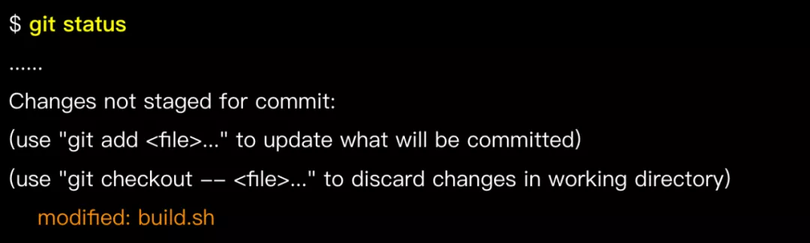

Git 代码回滚与找回的艺术
常见的代码回滚场景
1. Git回滚
1.1 回滚场景：仅在工作区修改时
当文件在工作区修改，还没有提交到暂存区和本地仓库时，可以用 git checkout -- 文件名来回滚这部分修改。
不过需要特别留意的是这些改动没有提交到 Git 仓库，Git 无法追踪其历史，一旦回滚就直接丢弃了。

git checkout -- build.sh
1.2 回滚场景：已添加到暂存区时
即执行过 git add 添加到暂存区，但还没 commit，这时可以用 git reset HEAD 文件名回滚。通过git status可以看到相关提示:
执行以下命令回滚暂存区的修改： git reset HEAD build.sh
回滚后工作区会保留该文件的改动，可重新编辑再提交，或者 git checkout -- 文件名 彻底丢弃修改。
1.3 回滚场景：已 commit，但还没有 push 时
即已经提交到本地代码库了，不过还没有 push 到远端。这时候可用 git reset命令，命令格式为：
git reset <要回滚到的 commit> 或者 git reset --hard <要回滚到的 commit>
需注意的是，提供的是要回滚到的 commit，该 commit 之后的提交记录会被丢弃。

git reset 默认会将被丢弃的记录所改动的文件保留在工作区中，以便重新编辑和再提交。加上 --hard 选项则不保留这部分内容，需谨慎使用。
1.4 回滚场景：修改本地最近一次 commit
有时 commit 之后发现刚才没改全，想再次修改后仍记录在一个 commit 里。利用 "git reset" 可达到这个目的，不过，Git 还提供了更简便的方法来修改最近一次 commit。
命令格式如下：
git commit --amend [ -m <commit说明> ]
如果命令中不加-m <commit说明>部分，则 Git 拉起编辑器来输入日志说明。

请注意，"git commit --amend" 只可用于修改本地未 push 的 commit，不要改动已 push 的 commit！
1.5 回滚场景：已 push 到远端时
注意！此时不能用 "git reset"，需要用 "git revert"！
注意！此时不能用 "git reset"，需要用 "git revert"！
注意！此时不能用 "git reset"，需要用 "git revert"！
是因为 "git reset" 会抹掉历史，用在已经 push 的记录上会带来各种问题；而 "git revert" 用于回滚某次提交的内容，并生成新的提交，不会抹掉历史。
| 命令 | 是否抹除历史 | 适用场景 |
|---|---|---|
| git reset | 是，回滚的历史将消除 | 本地未push的记录 |
| git revert | 否，历史记录保留，回滚后重新生成提交记录 | 回滚已push的内容 |

过程中如果遇到问题（如处理冲突时搞乱了），可用 git revert --abort 取消本次回滚行为。
如果要回滚的是一个合并 commit，revert 时要加上"-m <父节点序号>"，指定回滚后以哪个父节点的记录作为主线。合并的 commit 一般有 2 个父节点，按 1、2 数字排序，对于要回滚“分支合入主干的 commit”，常用"-m 1"，即用主干记录作为主线。 回滚合并 commit 是一个较为复杂的话题，作为一般性建议，应避免回滚合并 commit。对该话题感兴趣的可进一步了解：
(https://github.com/git/git/blob/master/Documentation/howto/revert-a-faulty-merge.txt)
2. reset与revert对比
-
分支初始状态如下：
-
如果执行
git reset B, 工作区会指向 B，其后的提交（C、D）被丢弃。

此时如果做一次新提交生成 C1，C1 跟 C、D 没有关联。

- 如果执行
git revert B, 回滚了 B 提交的内容后生成一个新 commit E，原有的历史不会被修改。

3. 找回已删除的内容
"git reflog"是恢复本地历史的强力工具，几乎可以恢复所有本地记录，例如被 reset 丢弃掉的 commit、被删掉的分支等，称得上代码找回的“最后一根救命稻草”。
然而需要注意，并非真正所有记录"git reflog"都能够恢复，有些情况仍然无能为力：
- 非本地操作的记录
"git reflog"能管理的是本地工作区操作记录，非本地（如其他人或在其他机器上）的记录它就无从知晓了。
- 未 commit 的内容
例如只在工作区或暂存区被回滚的内容（git checkout -- 文件 或 git reset HEAD 文件）。
- 太久远的内容
"git reflog"保留的记录有一定时间限制（默认 90 天），超时的会被自动清理。另外如果主动执行清理命令也会提前清理掉。
3.1 reflog - 恢复到特定 commit
一个典型场景是执行 reset 进行回滚，之后发现回滚错了，要恢复到另一个 commit 的状态。
我们通过git reflog查看 commit 操作历史，找到目标 commit，再通过 reset 恢复到目标 commit。

通过这个示例我们还可以看到清晰、有意义的 commit log 非常有帮助。假如 commit 日志都是"update"、"fix"这类无明确意义的说明，那么即使有"git reflog"这样的工具，想找回目标内容也是一件艰苦的事。
3.2 reflog - 恢复特定 commit 中的某个文件
场景：执行 reset 进行回滚，之后发现丢弃的 commit 中部分文件是需要的。
解决方法：通过 reflog 找到目标 commit，再通过以下命令恢复目标 commit 中的特定文件。
git checkout <目标 commit> -- <文件>
示例: reset 回滚到 commit 468213d 之后，发现原先最新状态中（即 commit d57f339）的 build.sh 文件还是需要的，于是将该文件版本单独恢复到工作区中。

3.3 reflog - 找回本地误删除的分支
场景：用"git branch -D"删除本地分支，后发现删错了，上面还有未合并内容！
解决方法：通过 reflog 找到分支被删前的 commit，基于目标 commit 重建分支。
git branch <分支名> <目标commit>
reflog 记录中，"to <分支名>"（如 moving from master to dev/pilot-001） 到切换到其他分支（如 moving from dev/pilot-001 to master）之间的 commit 记录就是分支上的改动，从中选择需要的 commit 重建分支。

3.4 找回合流后删除的分支
作为 Git 优秀实践之一，开发分支合流之后即可删掉，以保持代码库整洁，只保留活跃的分支。
一些同学合流后仍保留着分支，主要出于“分支以后可能还用得到”的想法。其实大可不必，已合入主干的内容不必担心丢失，随时可以找回，包括从特定 commit 重建开发分支。并且，实际需要用到旧开发分支的情况真的很少，一般来说，即使功能有 bug，也是基于主干拉出新分支来修复和验证。
假如要重建已合流分支，可通过主干历史找到分支合并记录，进而找到分支节点，基于该 commit 新建分支，例如：
git branch dev/feature-abc 1f85427

4. 关于代码回滚的一些建议
| 命令 | 特点 | 建议 |
|---|---|---|
git checkout -- 文件 |
回滚本地工作区未暂存的改动，被丢弃的内容不可恢复 | 操作前务必确认要回滚的改动是不再需要的 |
git reset HAED 文件 |
回滚暂存区的文件改动 | 一般不加--hard选项 |
git reset <commit> |
回滚到目标commit，丢弃掉commit之后的提交记录，将被丢弃记录所做的改动保留在工作区 | 1. 只操作本地记录，禁止操作已push的记录； 2. 慎用 --hard选项 |
git commit --amend |
修改最后一次commit的内容和提交日志 | 只操作本地记录，禁止操作已push的记录 |
git revert <commit> |
回滚相关commit所做的改动，再次提交将生成新的commit，历史记录不受影响 | 已push的内容如果回滚并使用revert |
总体来讲，回滚要谨慎，不要过于依赖回滚功能，避免使用"git push -f", 如果用到"git push -f"，你肯定哪里做错了！